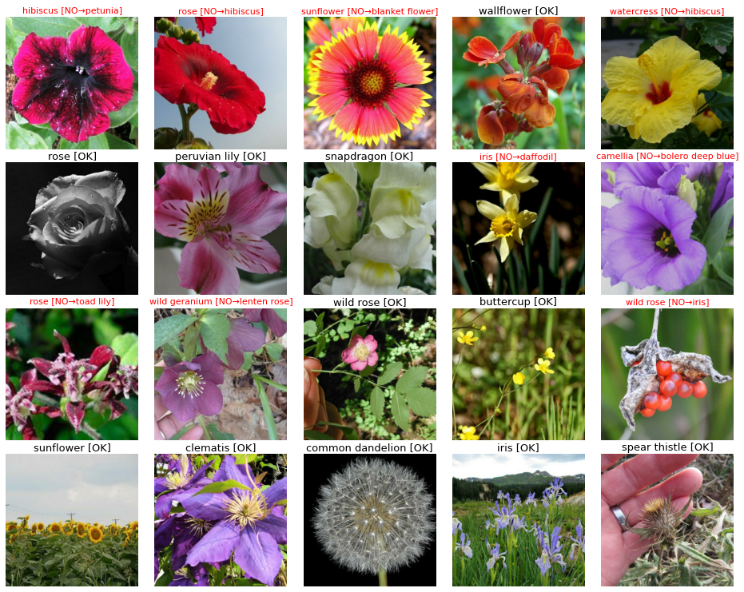
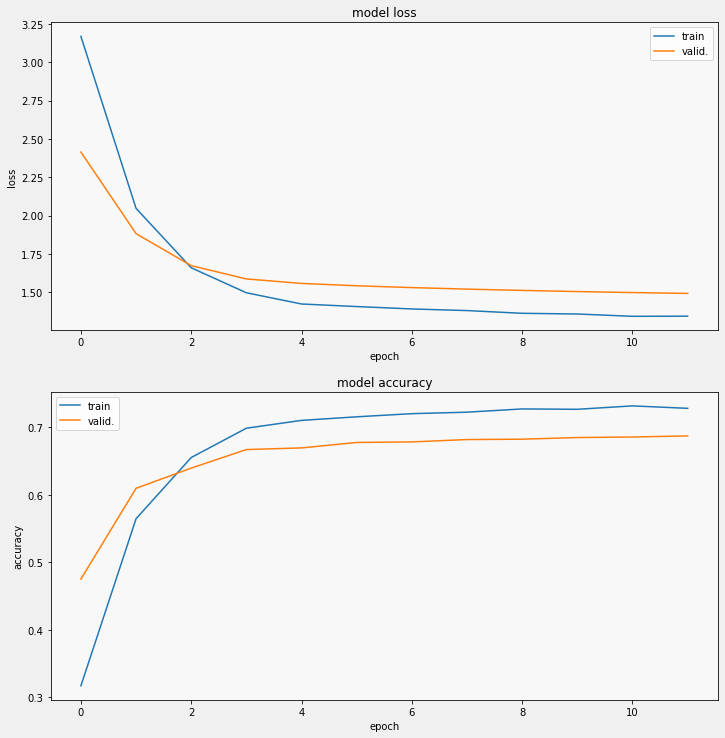
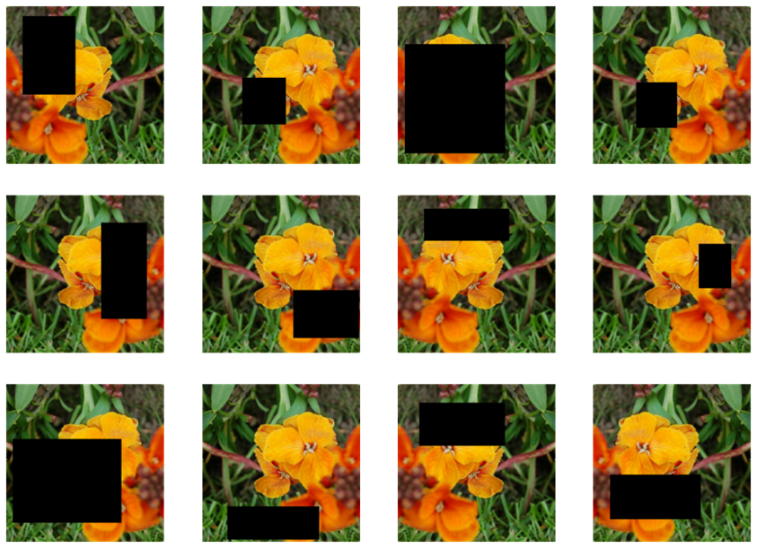

Using convolutional-neural-networks and data augmentation to predict flower species
Project Description
The goal for this project was to find out the difference between using various data augmentation techniques on flower classification using convolutional neural networks(CNN). There is a total of 104 different flower classes in the dataset. It consists of 7382 unique samples which all have an unique ID. These are further divided into a training, validation and test sets. Additionally, the training and validation set samples contain a label, which represents the class of flower. Since this is an image classification problem, we decided to use transfer learning from pre-trained models. The advantage of this is that it will allow us to build an accurate model in a timesaving manner. A pre-trained model is one that was trained on a large dataset in-order to solve a similar image classification problem.

Pretrained Model
The choice of pre-trained model was a principal component of the project. We looked at different research papers that compared the performance of different pre-trained models. From these we observed that the InceptionV3 model is one of the best performing. On the left you can see a graph of the models accuracy on the flower dataset. This was made with no data augmentation on the dataset. A ~70% accuracy on the raw dataset is very promising. In comparison, the VGG16 model was also tested on the dataset and performed much worse at ~20% accuracy. The loss can also be seen in graph and at ~1.5 it is much lower when compared to VGG16's 3.5. The above image shows an example of flower classification using the InceptionV3 model and no data augmentation.
Data Augmentation
For the project it was important to chose different data augmentation techniques in order to compare their accuracy with one another. There are various research papers that have tested different augmentation techniques and many of them found that changing the geometry of the image results in a higher accuracy. Additionally, it was shown that cropping and random erasing perform better than other geometry changing augmentation. As such, we chose these 3 augmentation techniques based on existing literature; Cropping, random erasing, and scaling. On the right you can see an example of random erasing. The method choses a random width and height of pixels and removes them from the image.Results
As of the writting of this page, this project is still underway and will be completed end of march. Once completed, you will be able to find the results and research paper here.